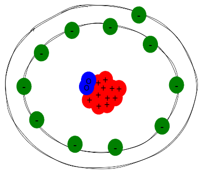

1
Sh
Shadium
1
Shadium is the lightest element. It is a gas at room temperature, and at freezing temperatures it is visible as a black gas.
2
Ru
Russium
20
Russium is the heaviest element, and in large amounts, can be poisonous. If mixed with shadium, it can create a poison gas, killing within 5 seconds, maximum. It is a solid at room temperature and becomes a liquid at 100°C.
3
In
Inklion
2

Inklion is a blackish-blueish liquid at room temperature, and is very sticky.
4
Fi
Firogen
6
Firogen is a gas at room temperature, and increase the temperature of elements it comes in contact with. It creates an explosive when mixed with shadium(Fi2Sh1). There is an exception with sanitium, where the amount of firogen is significantly increased.
5
Sa
Sanitium
3
Sanitium is a substance used to clean metals, but should not be used with human skin. It is a slimy liquid. If mixed with firogen, it will significantly increase the amount of firogen present.
6
Pa
Paprium
5
Paprium is a very flimsy metal, but does not mix with any element. However, it can still be broken by huge forces.
7
Li
Liten
4
LITEN IS AN EXCEPTIONAL ELEMENT. It has double the electrons that it should normally have, making it very bright.
8
St
Stallium
3
Stallium is a silvery metal that is very sturdy. It breaks down when mixed with russium, but does not change with other elements.
9
Te
Tennicide
8
Tennicide's neutrons move around more than usual, making it very bouncy.
10
Co
Coallium
10
Coallium is a black gas, similar to shadium, but it it much heavier. At 100°C, it becomes a black liquid. It is used to power many things.
11
Hy
Hydroxium
2
Hydroxium is the gas needed for living. Without it, every living thing would die. It is a very light element, and that gives it the ability to go around very easily.
12
Sp
Spadium
1
Spadium is a gas that, in the wild, is always found in massive clumps. In any dose, it is not fatal, and does not hurt in any way. It does not combine with any other substances. The special term for a small group of spadium is an ace.
13
Sr
Strongicide
15
Strongicide is a metal used for building muscle mass.